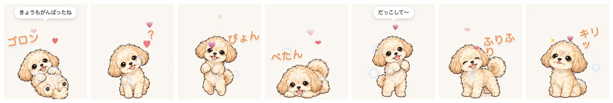

あなたのMacに、ビスケットが住みつきます。
画面のすみで、だいたい寝ています。このページの右下にもいるので、カーソルを乗せて撫でてみてください。タップして撫でてみてください。
0.2.0で、できるようになったこと
しゃべって、ゴロンして、首をかしげるようになりました。このページの右下のビスケットでも試せます。

- 撫でるとハート。眠っているときはZzzがのぼって、ときどき寝言も言います。
- 時間帯でしゃべります。朝は「おはよう！」、昼は「おやつちょーだい」「お散歩行こっ」、夜は「ねむい…」。
- 足もとからシャボン玉。春は桜、冬は雪が舞います。
- 効果音。転がると「ゴロン」、回ると「くるっ」、走ると「タタタッ」、お手で「ぱふっ」。
- 新しいポーズが7つ。ごろん・首かしげ・うれしい・伏せ・抱っこして・尻尾ふりふり・おすまし。
- メニューバーから。「動きを見る」で好きな動きをいつでも。「エフェクト」でハートや吹き出しをまとめて止められます。
- ダウンロード上のボタンから
.dmgをダウンロードします。 - アプリケーションフォルダへダウンロードした
.dmgを開いて、中の Biscuit をアプリケーションフォルダにドラッグします。 - はじめて開くとき「開発元を確認できません」と出たら、アイコンを右クリックして「開く」を選んでください。一度許可すれば、次からはふつうに開けます。
Intel搭載のMac向けに作っています。Appleシリコン搭載のMacでは、はじめて開くときにRosettaのインストールを求められることがあります。Windows版は準備中です。